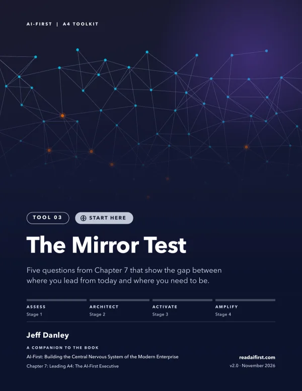
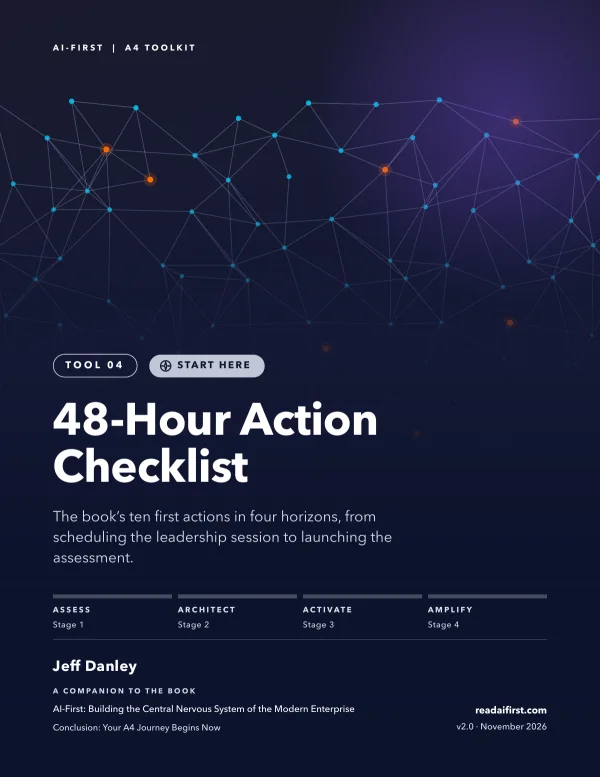

The Delegation Trap
What happens when AI gets handed to the technology team instead of led from the top, and how to take it back.
The A4 Framework for turning AI pilots into enterprise systems, written for the leaders who have to make it work.
Paperback and Kindle are on Amazon. Placeholderhardcover buy link, if the hardcover edition (ISBN 9798994389911) should get its own button

The book opens with the Widening Gap, the distance between companies that build AI into how they decide and operate and companies still running it as a string of experiments.
That gap compounds, so the lead a competitor builds this year becomes the base for a bigger one next year.
The companies pulling ahead treat AI as the organization’s Central Nervous System: the way it senses opportunities and threats, turns information into insight, coordinates action across every function and learns from every interaction.
Getting there runs through four stages. You Assess where you stand, Architect the structure, data and process to carry the work, Activate the right use cases in a 90-Day Activation Sprint, and Amplify through culture until the change holds. Then you run the cycle again.
Foreword by Dr. Mark Brigman, CEO of PARTNERNOMICS. Introduction: The Hidden Power of AI-First Organizations
Conclusion: Your A4 Journey Begins Now
What happens when AI gets handed to the technology team instead of led from the top, and how to take it back.
Celebrating metrics that don’t matter while competitors transform, and the fix: benchmark against AI-first competitors instead of traditional peers.
Five questions on each foundation, with each foundation scored 0 to 100, to find the one holding the rest back.
Where a leader stands today, and what moves them up a stage.
Five setbacks that hit AI programs. Each starts in a specific A4 stage and comes with the book’s prevention, and one four-phase Recovery Playbook covers all five.
“Jeff Danley doesn’t just describe the future; he provides the manual to build it. This is the operating system every CEO has been waiting for.”
Dr. Mark Brigman, CEO, PARTNERNOMICS
PlaceholderAmazon reader quote, 20 to 35 words, verbatim
PlaceholderAmazon reader quote, 20 to 35 words, verbatim
These three come straight from the book and download with no email: the whole framework on a few pages, five questions to ask yourself, and the first moves to make this week.

A short read for board members and leadership teams on the gap, the Central Nervous System, the four stages and the three commitments.

Five questions from Chapter 7 that show the gap between where you lead from today and where you need to be.

The book’s ten first actions in four horizons, from scheduling the leadership session to launching the assessment.
Ordering ten or more for a leadership team, a kickoff or a book club? I’ll set up a team order, and if it helps, I can join the group for a talk or a working session on the A4 Framework.
Already read it? An honest review on Amazon helps the next leader find the book, and it takes about two minutes.

I’m Jeff Danley. I lead enterprise AI strategy and a portfolio of AI agents, I’m a co-inventor on US Patent 7,376,091, part of the foundation of today’s mobile hotspot, and I serve on the board of the Kansas City AI Club. I wrote AI-First for the leaders who have to turn AI pilots into enterprise systems, and I speak and run sessions on the A4 Framework.